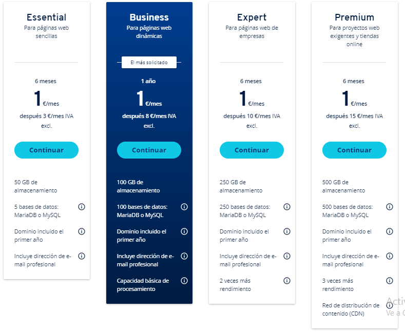

¿Dónde puedo conseguir hosting?
Existen múltiples empresas que ofrecen servicios de hosting. En nuestro caso, explicaremos las opciones
que ofrece IONOS, que ha sido la empresa que nos ha proporcionado nuestro dominio en nuestra guía Contratar un dominio con IONOS.
Paquetes ofrecidos por IONOS

En nuestra guía Contratar un dominio con IONOS indicamos
cómo llegar a este punto. Si no estás aquí, pincha el enlace y vuelve cuando hayas llegado.
En principio, IONOS ofrece los siguientes paquetes:
| WordPress |
Hosting |
MyWebsite |
| 1 dominio incluído el primer año |
1 dominio incluído el primer año |
1 dominio incluído el primer año |
| 5 cuentas de email |
1 cuenta de email |
1 cuenta de email |
| Certificado SSL |
Certificado SSL |
Certificado SSL |
| Filtro antispam |
100 GB de almacenamiento |
Todo el espacio que necesites |
| Webmail |
100 bases de datos (1GB SSD) |
Editor web |
|
Rendimiento escalable |
Widgets para redes sociales |
Sin embargo, estas no son todas los paquetes que ofrece IONOS. Si hacemos click en "Ver todos los packs"
podemos ver aún más opciones.
Como no necesitamos espacio ilimitado ni vamos a crear nuestra web en WordPress, seleccionamos "Ver
todos los packs de Web Hosting".
Todos los paquetes de hosting

Los paquetes de hosting de IONOS ofrecen las siguientes características:
| Essential |
Business |
Expert |
Premium |
| 3€/mes |
8€/mes |
10€/mes |
15€/mes |
| 50 GB de almacenamiento |
100 GB de almacenamiento |
250 GB de almacenamiento |
500 GB de almacenamiento |
| 5 bases de datos: MariaDB o MySQL |
100 bases de datos: MariaDB o MySQL |
250 bases de datos: MariaDB o MySQL |
500 bases de datos: MariaDB o MySQL |
| Dominio incluído el primer año |
Dominio incluído el primer año |
Dominio incluído el primer año |
Dominio incluído el primer año |
| Incluye dirección de email profesional |
Incluye dirección de email profesional |
Incluye dirección de email profesional |
Incluye dirección de email profesional |
|
Capacidad básica de almacenamiento |
2 veces más rendimiento |
3 veces más rendimiento |
|
|
|
Red de distribución de contenido |
Hosting en CDMON

Los paquetes de hosting de CDMON ofrecen las siguientes características:
| Junior |
Senior |
Master |
Preserver |
| 5€/mes |
11€/mes |
21€/mes |
50€/mes |
| 5 GB de almacenamiento |
10 GB de almacenamiento |
20 GB de almacenamiento |
40 GB de almacenamiento |
| 100 GB de transferencia |
500 GB de transferencia |
800 GB de transferencia |
1000 GB de transferencia |
| 10 cuentas de correo 5GB |
50 cuentas de correo 5GB |
75 cuentas de correo 5GB |
100 cuentas de correo 5GB |
| CMS auto instalable en un click |
CMS auto instalable en un click |
CMS auto instalable en un click |
CMS auto instalable en un click |
Comparativa entre IONOS y CDMON
Essential vs Junior
| Essential (IONOS) |
Junior (CDMON) |
| 3€/mes |
5€/mes |
| 50 GB de almacenamiento |
5 GB de almacenamiento |
| 5 bases de datos: MariaDB o MySQL |
Bases de datos ilimitadas: MariaDB o MySQL |
Business vs Senior
| Business (IONOS) |
Senior (CDMON) |
| 8€/mes |
11€/mes |
| 100 GB de almacenamiento |
10 GB de almacenamiento |
| 100 bases de datos: MariaDB o MySQL |
Bases de datos ilimitadas: MariaDB o MySQL |
Expert vs Master
| Expert (IONOS) |
Master (CDMON) |
| 10€/mes |
21€/mes |
| 250 GB de almacenamiento |
20 GB de almacenamiento |
| 250 bases de datos: MariaDB o MySQL |
Bases de datos ilimitadas: MariaDB o MySQL |
Premium vs Preserver
| Premium (IONOS) |
Preserver (CDMON) |
| 15€/mes |
50€/mes |
| 500 GB de almacenamiento |
40 GB de almacenamiento |
| 500 bases de datos: MariaDB o MySQL |
Bases de datos ilimitadas: MariaDB o MySQL |